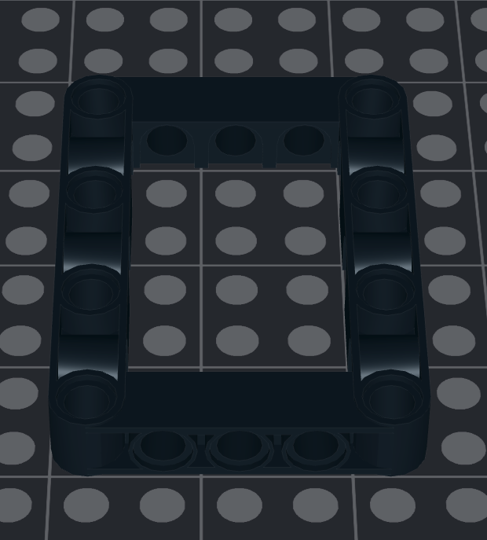
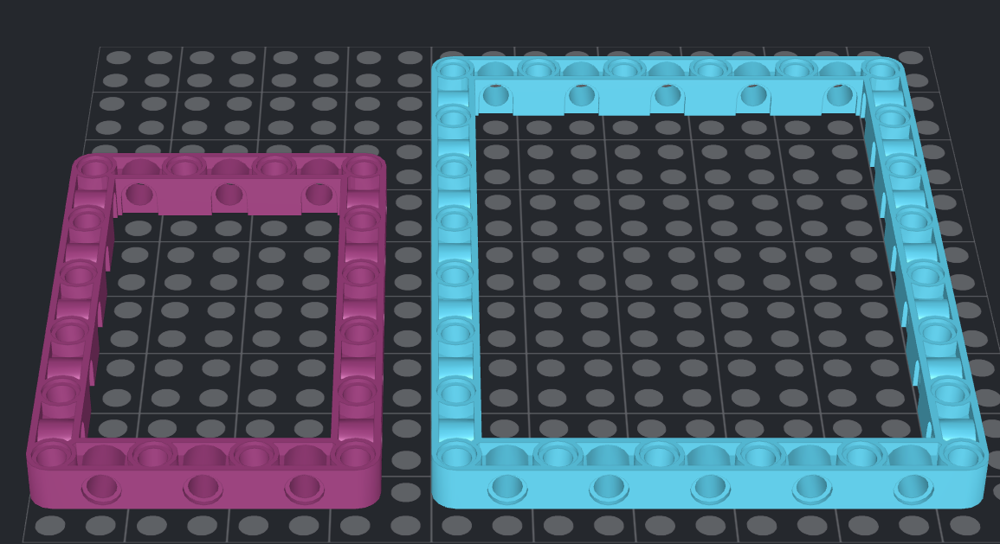

Module 8: Frames and Bracing
We've looked at gears for about 3 modules, but what happens when they slip? They shouldn't. In this module, you'll learn about frames and how they prevent slippage. We'll also look at a technique called bracing, which can help make a structure stronger.
Frames
Frames secure gears together to avoid making them slip. They are absolutely necessary to avoid mistakes. Without frames, moving parts on your robot wouldn't work well. They can be inconsistent and unreliable. You want really useful robots, not rickety ones. Fortunately, if you've seen the previous modules, you're familiar with Professor Cheese using these parts:
Without respect to driver gears and follower gears (and motors), below is an example of a frame with gears. Instead of motors, Professor Cheese has added two knobs if you ever build this frame in real life to test it out.
As you can see, the frame forces the gears to stay together. The thick, rectangular border (all 4 sides together) enhances this capability. There are other kinds of frames too, such as the ones below. However, they aren't ideal for framing gears because they are too large. They cause axles to shift.
Below are some of the gearing combinations with frames with the default "Technic, Liftarm, Modified Frame Thick 5x7 Open Center" frame.